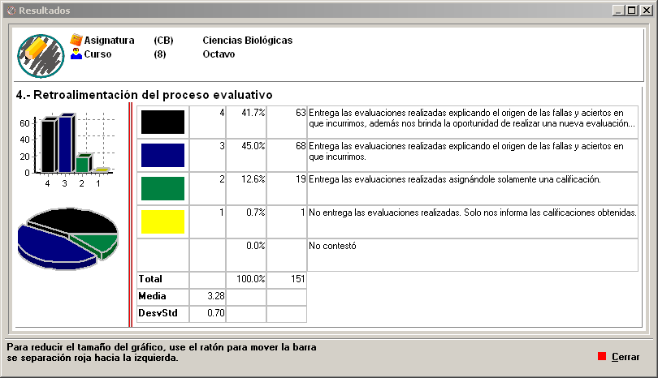
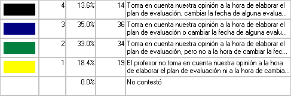
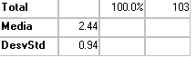
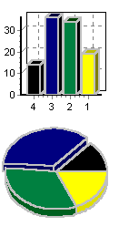

Visualización de Resultados
Al seleccionar un ítem para visualización el programa presenta una ventana con los totales, estadísticas, y gráficos de los resultados para el ítem seleccionado.

La parte superior de la ventana presenta información sobre el ítem que se está visualizando:
La parte izquierda de la ventana contiene una tabla con los totales para cada una de las respuestas a la pregunta seleccionada.

La tabla presenta la siguiente información:
- La primera columna contiene el color que corresponde a la pregunta en los gráficos del lado izquierdo.
- La segunda columna contiene el número de la respuesta.
- La tercera columna contiene el porcentaje de encuestados que seleccionaron la respuesta correspondiente.
- La cuarta columna contiene el número de encuestados que seleccionaron la respuesta correspondiente.
- La quinta columna contiene el texto de la respuesta.
Debajo de la tabla de totalización aparece otra con estadísticas básicas:

Por último, la ventana presenta a la izquierda los gráficos correspondientes a los resultados presentados en la tabla de totalizaciones. Para reducir el tamaño de los gráficos y aumentar el espacio destinado al texto de las respuestas, use el ratón para rodar la barra de división roja hacia la izquierda.
